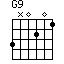
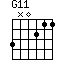

POSTS
If you rescue me 기타 코드 guitar chord, tab - 수면의 과학 The Science of Sleep OST
If you rescue me
If you rescue me I’ll be your friend forever
Let me in your bed I’ll keep you warm in winter
All the kitties are playing and they’re having such fun
I wish that could happen to me
But if you rescue me I’ll never have to be along again
Oh the cars drive so fast and the people are mean
and sometimes it’s hard to find food
Let me into your world I’ll keep you warm and amused
All the things we can do in the rain
If you rescue me I’ll be your friend forever
Oh someday I know someone will look into my eyes
And say, “Hello, you’re my very special kitten”

(Thanks to
http://www.chordie.com/chords.php)
If you think this cord progression is useful, plese drop me a line, bluedskim@gmail.com.
냥을 좋아한다면~